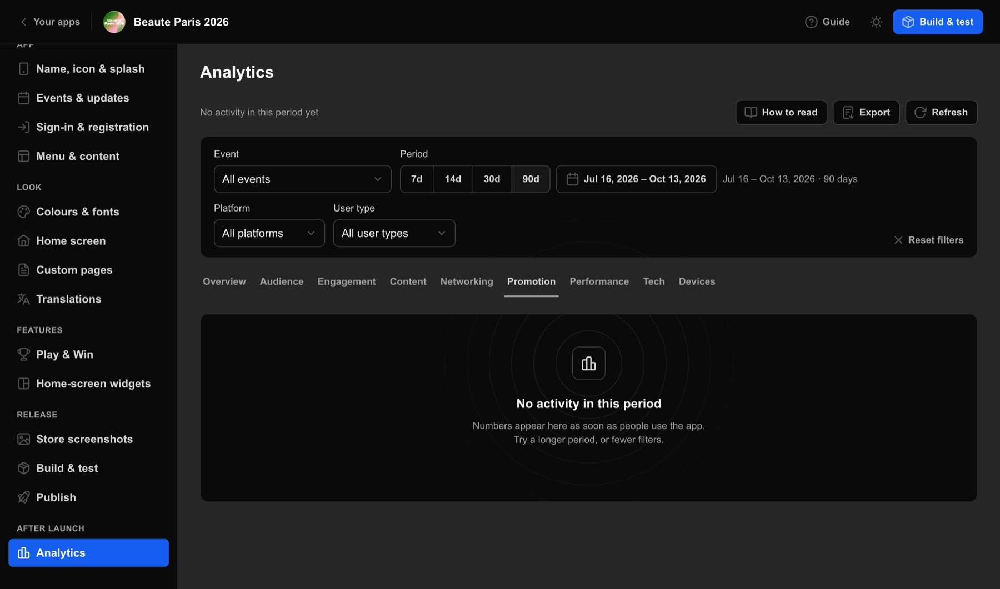

From a live app to numbers you can read, narrow and share.
The result
You can read how people used your app in a period: who opened it, what they looked at and which features they used, and you know how each number is counted.
Analytics is in App Studio's sidebar under After launch. Its eight dashboard tabs, from Overview to Tech, share one filter bar, and the filters stay as you switch tabs.
The six Overview tiles each compare the period with the same number of days just before. How to read says what a number means, and Latest activity how fresh it is.
On Overview, read the six tiles against the days just before, then Daily activity below them.
Your move
Overview
“Previous period: [value]”
“Same as the previous period”
“Nothing to compare in the previous period”
Drawing based on App Studio's code: The lines under the Overview tiles
People, Signed in, Devices, Sessions, Avg. session and Screen views are each compared with the same number of days just before: green is better, red is worse.
Watch out
The days of Daily activity do not add up to the tiles: each day counts its own people.
Someone who used the app before signing in, and then signed in during the same period, counts twice under People: once as the phone and once as the account.
A session with a single action counts as 0 minutes and pulls Avg. session down.
Done when: You know how each headline number moved against the days just before.
Read Latest activity under the heading, and press Refresh to read the open tab again.
Your move

The line under the Analytics heading, here with nothing recorded in the period
Latest activity says when the newest activity under your filters was recorded, from just now to a date once it is 14 days or more, or the line reads “No activity in this period yet”.
Watch out
Refresh reads only the open tab: another tab keeps the numbers it read for the same filters until you press Refresh there.
The Analytics guide says a phone without a connection keeps its records for up to 30 days, so a period that has just ended can still grow a little.
Data completeness on Tech, measured only with All events, shows the share of the phones' records that has arrived, and says “Some data still on its way” below 99%.
Done when: You know when the newest activity was recorded, or that none was, and the open tab is read again.
Open Content for the exhibitors, products, sessions, speakers, brands, documents and videos people looked at.
Your move
Content
“Views per impression in a list”
Drawing based on App Studio's code: The help text of CTR in the top table on Content, shown when you point at its help icon
Each row of the top table gives views, people, favourites, impressions and CTR; exhibitors add Booth located and Meetings asked, and sessions Added to agenda.
Watch out
CTR can pass 100%, because a profile can also be opened from search, a link or another profile.
Favourites that were later removed still count in the top table; Favourites shows how many were removed.
Done when: You know which items people viewed most.
Open Networking to see the meetings, messages, leads and personal agendas of the period.
Your move
Networking
“From the request to the rating.”
“Messages sent, chats started and chats people opened to read.”
“Badges scanned in the app, and what became of the leads.”
Drawing based on App Studio's code: The descriptions of three Networking cards: Meetings, Messaging and Leads
Meetings follows requests to the meetings accepted and rated, and those declined, cancelled and rescheduled.
Watch out
Each meeting step counts what happened in the period, not one set of meetings followed through, so accepted can be more than requested.
Meeting attendance shows 0% and “Low attendance” whenever a meeting was accepted, and Contact requests stays empty: the Analytics guide says the app does not offer a meeting check-in or contact requests yet.
Done when: You know how many meetings were requested and accepted in the period.
Open Promotion to see how sponsor placements, push notifications, links and QR codes reached people.
Your move
Promotion
“[n] clicks on sponsored places.”
“Impressions per place in the app, with the click rate.”
“QR codes scanned and downloaded in the app.”
Drawing based on App Studio's code: The descriptions of three Promotion cards: Sponsors, Placements and QR codes
Sponsors gives the impressions, clicks and CTR of each sponsor in each place its banner was shown.
Watch out
The Analytics guide says a sponsor impression counts when at least half of the banner was on screen for at least a second, once per screen visit.
The Analytics guide says Received misses pushes that arrived while the app was not on screen unless they were tapped, so the open rate can pass 100%, while Opened is complete.
Done when: You know how often sponsor banners were seen and clicked, and how many pushes were opened.
Performance and Tech show how fast and how reliably the app worked. Devices lists every phone with your app that has reported in, and works on its own.
Open Performance for speed and server answers, and Tech for versions, phones, permissions and reliability.
Your move
Performance
“Cold: from tapping the icon to the first screen people can use. Warm: from coming back to the app to its first frame.”
“The typical cold start, with the slowest 5% beside it.”
“How the sampled calls to the server were answered.”
Drawing based on App Studio's code: The descriptions of three Performance cards: App start, Start by platform and release and Server answers
Lower is better everywhere on Performance: Typical is the median, and Slowest 5% the 95th percentile.
Watch out
Errors people saw on Tech leaves out app crashes; your ExpoPlatform team can see more about the app's health, such as crashes and errors: ask your ExpoPlatform contact.
Done when: You know how fast the app started and how reliably it worked in the period.
Under Platform, choose iOS or Android, and under User type, choose Visitor, Exhibitor, Speaker or Guest.
Your move
Platform and User type, under Event
Each choice applies at once: the open tab is read again, then the other tabs, and the filters stay as you switch tabs.
Watch out
Languages, Where people are, Top cities, Operating systems and Phones ignore the user type, and Data completeness and the people counts in the Event list ignore both.
The Analytics guide says older app versions do not report the user type: their activity drops out as soon as you choose one.
Filters are not saved: a reload of your admin's page in the same browser tab keeps them, but a new browser tab opens your list of apps.
Done when: The open tab shows that slice, and Reset filters brings back every event, platform and user type and the last 30 days.
Why:Languages, Where people are, Top cities, Operating systems and Phones ignore the user type, and Data completeness and the people counts in the Event list always cover every user type.
What to do: Nothing to fix: How the numbers are counted lists what each filter does not narrow.
Every step links to the pages of the App Studio guide it comes from. App Studio Playbook v1.0.2, built from the App Studio guide v1.1.0, checked against App Studio c1421d4 on 14 Oct 2026.
Show me: See how people use the app
Use ← and → to move
Words from a step or a problem, such as build, widget or greyed out.